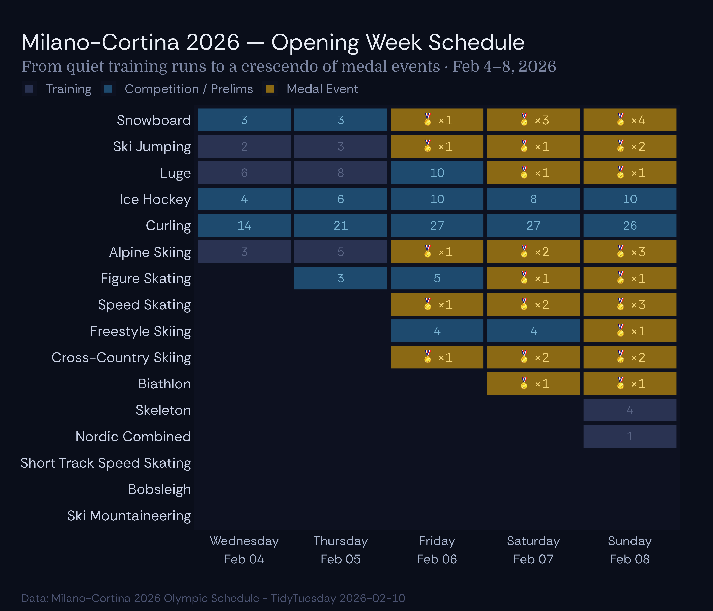

library(tidyverse)
library(tidyverse)
library(ggtext)
tuesdata <- tidytuesdayR::tt_load('2026-02-10')
schedule <- tuesdata$schedule
schedule <- schedule |>
mutate(
event_type = case_when(
is_medal_event == TRUE ~ "Medal",
is_training == TRUE ~ "Training",
TRUE ~ "Competition"
),
date = as.Date(date)
)
# Summarise data:
# Priority: Medal > Competition > Training
type_priority <- c("Medal" = 3, "Competition" = 2, "Training" = 1)
daily_summary <- schedule |>
mutate(priority = type_priority[event_type]) |>
group_by(discipline_name, discipline_code, date) |>
summarise(
n_events = n(),
n_medal = sum(is_medal_event),
n_training = sum(is_training),
n_competition = n_events - n_medal - n_training,
best_type = event_type[which.max(priority)],
.groups = "drop"
)
medal_per_day <- schedule |>
filter(is_medal_event) |>
group_by(date) |>
summarise(medals = n_distinct(event_description), .groups = "drop")
# Grids for dates:
all_dates <- tibble(date = seq(as.Date("2026-02-04"), as.Date("2026-02-08"), by = 1))
all_discs <- schedule |>
distinct(discipline_name, discipline_code) |>
arrange(discipline_name)
full_grid <- crossing(all_discs, all_dates) |>
left_join(daily_summary, by = c("discipline_name", "discipline_code", "date"))
disc_order <- schedule |>
group_by(discipline_name) |>
summarise(first_date = min(date), .groups = "drop") |>
arrange(desc(first_date), discipline_name) |>
pull(discipline_name)
full_grid <- full_grid |>
mutate(
discipline_name = factor(discipline_name, levels = disc_order),
best_type = factor(best_type, levels = c("Training", "Competition", "Medal")),
day_label = format(date, "%a\n%b %d")
)
# Plot specific:
day_labels <- full_grid |>
distinct(date) |>
mutate(
label = paste0(format(date, "%A"), "\n", format(date, "%b %d")),
date_fct = factor(date)
)
tile_colours <- c(
"Training" = "#2a3352",
"Competition" = "#1e4a6e",
"Medal" = "#8B6914"
)
tile_borders <- c(
"Training" = "#3a4565",
"Competition" = "#2d6a9e",
"Medal" = "#d4a843"
)
y_labels_df <- tibble(
discipline_name = factor(disc_order, levels = disc_order),
x = min(all_dates$date) - 0.55,
label = disc_order
)Canvas
This is a quarto notebook for enabling you to develop visualisations properly. You can override them at the chunk level.
Exporting
p <-
ggplot(full_grid, aes(x = date, y = discipline_name)) +
geom_tile(aes(fill = best_type), colour = "#0d1120", linewidth = 1.2, na.rm = TRUE) +
geom_text(data = full_grid |> filter(best_type == "Medal"), aes(label = paste0("🏅 ×", n_medal)), colour = "#f5d67b", size = 3.2, fontface = "bold", na.rm = TRUE) +
geom_text(data = full_grid |> filter(best_type != "Medal" & !is.na(best_type)), aes(label = n_events, colour = best_type), size = 3, fontface = "plain", na.rm = TRUE) +
# Custom y-axis labels
geom_text(
data = y_labels_df,
aes(x = x, y = discipline_name, label = label),
inherit.aes = FALSE,
hjust = 1,
colour = "#c8d0e4",
size = 10/.pt
) +
scale_fill_manual(values = tile_colours, na.value = "#0d1120", breaks = c("Training", "Competition", "Medal"), labels = c("Training", "Competition / Prelims", "Medal Event"), name = NULL) +
scale_colour_manual(values = c("Training" = "#5a6585", "Competition" = "#7ab4d4"), guide = "none") +
scale_x_date(breaks = all_dates$date, labels = function(x) paste0(format(x, "%A"), "\n", format(x, "%b %d")), expand = expansion(add = c(0.01, 0.01))) +
scale_y_discrete(expand = expansion(add = 0.5)) +
coord_cartesian(clip = "off") +
labs(title = "Milano-Cortina 2026 — Opening Week Schedule", subtitle = "From quiet training runs to a crescendo of medal events · Feb 4–8, 2026", caption = "Data: Milano-Cortina 2026 Olympic Schedule - TidyTuesday 2026-02-10", x = NULL, y = NULL) +
theme_minimal(base_size = 12, base_family = "Rethink Sans") +
theme(
plot.background = element_rect(fill = "#0a0e1a", colour = NA),
panel.background = element_rect(fill = "#0a0e1a", colour = NA),
panel.grid = element_blank(),
plot.title = element_text(colour = "#e8ecf4", face = "bold", size = 16, hjust = 0, margin = margin(b = 4, l=-120)),
plot.subtitle = element_text(colour = "#7a84a0", size = 11, hjust = 0, margin = margin(b = 4, l=-120), family = "Domine"),
plot.caption = element_text(colour = "#4a5270", size = 8, hjust = 0, ,vjust= -5,margin = margin(t = 8, l = -120)),
axis.text.x = element_text(colour = "#a8b4cc", size = 9, lineheight = 1.2),
axis.text.y = element_blank(),
legend.position = "top",
legend.justification = "left",
legend.text = element_text(colour = "#8a94b0", size = 9),
legend.key.size = unit(0.8, "lines"),
legend.margin = margin(b = -5, l = -120),
plot.margin = margin(24, 24, 16, 135),
plot.title.position = "plot",
plot.caption.position = "plot"
)
p
ggsave("/Users/joka/Documents/R_projects/data_exp/TidyTuesday/milano_cortina_schedule.png",
plot = p,
width = 7,
height = 6,
dpi = 300)ggsave("plots/",width=7,height=4,dpi=120)
ggsave("plots/",width=7,height=4,dpi=300) # Best practice dpi
ggsave("plots/",width=7,height=4,dpi=600)
# Transparent background:
ggsave("plots/",width,height,bg="transparent")